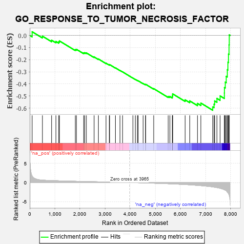

| | | Dataset | 7d |
| Phenotype | NoPhenotypeAvailable |
| Upregulated in class | na_neg |
| GeneSet | GO_RESPONSE_TO_TUMOR_NECROSIS_FACTOR |
| Enrichment Score (ES) | -0.6179388 |
| Normalized Enrichment Score (NES) | -1.8040587 |
| Nominal p-value | 0.0 |
| FDR q-value | 0.015102461 |
| FWER p-Value | 0.412 |
Table: GSEA Results Summary

Fig 1: Enrichment plot: GO_RESPONSE_TO_TUMOR_NECROSIS_FACTOR
Profile of the Running ES Score & Positions of GeneSet Members on the Rank Ordered List
| PROBE | GENE SYMBOL | GENE_TITLE | RANK IN GENE LIST | RANK METRIC SCORE | RUNNING ES | CORE ENRICHMENT | | 1 | UBE2K | | | 94 | 1.739 | 0.0301 | No |
| 2 | MYOD1 | | | 504 | 0.628 | -0.0065 | No |
| 3 | IGBP1 | | | 869 | 0.514 | -0.0400 | No |
| 4 | AKT1 | | | 1040 | 0.476 | -0.0500 | No |
| 5 | PSMD7 | | | 1152 | 0.454 | -0.0531 | No |
| 6 | PSMD2 | | | 1181 | 0.450 | -0.0458 | No |
| 7 | PSMD4 | | | 1811 | 0.335 | -0.1171 | No |
| 8 | PSMD6 | | | 1858 | 0.326 | -0.1151 | No |
| 9 | PSME4 | | | 2143 | 0.285 | -0.1441 | No |
| 10 | SYK | | | 2186 | 0.278 | -0.1426 | No |
| 11 | PSMF1 | | | 2251 | 0.268 | -0.1443 | No |
| 12 | PSMD5 | | | 2560 | 0.218 | -0.1779 | No |
| 13 | RORA | | | 2730 | 0.193 | -0.1946 | No |
| 14 | PIAS4 | | | 3034 | 0.145 | -0.2293 | No |
| 15 | GCH1 | | | 3166 | 0.127 | -0.2428 | No |
| 16 | PSMD9 | | | 3179 | 0.125 | -0.2413 | No |
| 17 | TRAIP | | | 3408 | 0.088 | -0.2680 | No |
| 18 | MAPK3 | | | 3589 | 0.062 | -0.2892 | No |
| 19 | DHX9 | | | 3693 | 0.044 | -0.3011 | No |
| 20 | TRAF1 | | | 4104 | -0.024 | -0.3523 | No |
| 21 | GGT7 | | | 4200 | -0.041 | -0.3633 | No |
| 22 | PSME3 | | | 4280 | -0.056 | -0.3720 | No |
| 23 | BAG4 | | | 4314 | -0.061 | -0.3746 | No |
| 24 | ILK | | | 4510 | -0.096 | -0.3969 | No |
| 25 | NUB1 | | | 4604 | -0.119 | -0.4058 | No |
| 26 | GATA3 | | | 4614 | -0.120 | -0.4040 | No |
| 27 | CASP1 | | | 4932 | -0.185 | -0.4396 | No |
| 28 | FABP4 | | | 5509 | -0.322 | -0.5046 | No |
| 29 | SPHK1 | | | 5576 | -0.339 | -0.5047 | No |
| 30 | PSMD1 | | | 5674 | -0.367 | -0.5081 | No |
| 31 | CASP8 | | | 5678 | -0.369 | -0.4996 | No |
| 32 | CDIP1 | | | 5684 | -0.370 | -0.4913 | No |
| 33 | MADD | | | 5686 | -0.371 | -0.4825 | No |
| 34 | KLF2 | | | 6182 | -0.532 | -0.5322 | No |
| 35 | BIRC3 | | | 6366 | -0.603 | -0.5407 | No |
| 36 | RFFL | | | 6674 | -0.749 | -0.5614 | No |
| 37 | ADAM9 | | | 6808 | -0.819 | -0.5585 | No |
| 38 | CIB1 | | | 7280 | -1.152 | -0.5902 | Yes |
| 39 | CYLD | | | 7333 | -1.206 | -0.5676 | Yes |
| 40 | WDR35 | | | 7357 | -1.225 | -0.5410 | Yes |
| 41 | GGT1 | | | 7447 | -1.329 | -0.5202 | Yes |
| 42 | TRAF4 | | | 7573 | -1.514 | -0.4995 | Yes |
| 43 | RNF31 | | | 7744 | -1.895 | -0.4753 | Yes |
| 44 | CASP3 | | | 7747 | -1.902 | -0.4297 | Yes |
| 45 | ST18 | | | 7780 | -2.007 | -0.3854 | Yes |
| 46 | TRAF6 | | | 7818 | -2.157 | -0.3380 | Yes |
| 47 | TRAF2 | | | 7861 | -2.481 | -0.2835 | Yes |
| 48 | TRAF3 | | | 7886 | -2.695 | -0.2216 | Yes |
| 49 | PSMD3 | | | 7907 | -2.887 | -0.1545 | Yes |
| 50 | PSMD8 | | | 7931 | -3.286 | -0.0782 | Yes |
| 51 | TRAF5 | | | 7938 | -3.448 | 0.0042 | Yes |
Table: GSEA details [plain text format]
Fig 2: GO_RESPONSE_TO_TUMOR_NECROSIS_FACTOR: Random ES distribution
Gene set null distribution of ES for GO_RESPONSE_TO_TUMOR_NECROSIS_FACTOR